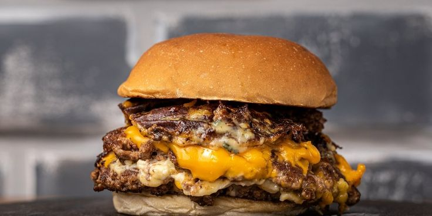

Burger Smash

Descripción
La smash burger es una variedad de hamburguesa americana que se caracteriza
por su particular técnica de la cocción,
que se realiza mediante el aplastado de la carne,
buscando que quede finita y se haga una costrita de cada lado de esta.
Ingredientes
- Pan de hamburgesas
- Bolas de 120g de carne
- Queso Cheddar
- Panceta(Opcional)
Paso a Paso
- Pre calentamos la plancha a 180 grados
- Engrasamos con manteca y ponemos las bolitas de carne
- Pasado 2 minutos, aplastamos las bolita hasta que queden lo mas finas posible
- Una vez que esta hecha la costra, la damos vuelta y le ponemos sal y 2 fetas de cheddar
- Retiramos las carnes y ponemos a dorar los panes en la misma plancha
- Luego, armamos la hamburgesa y la envolvemos en aluminio
Inicio